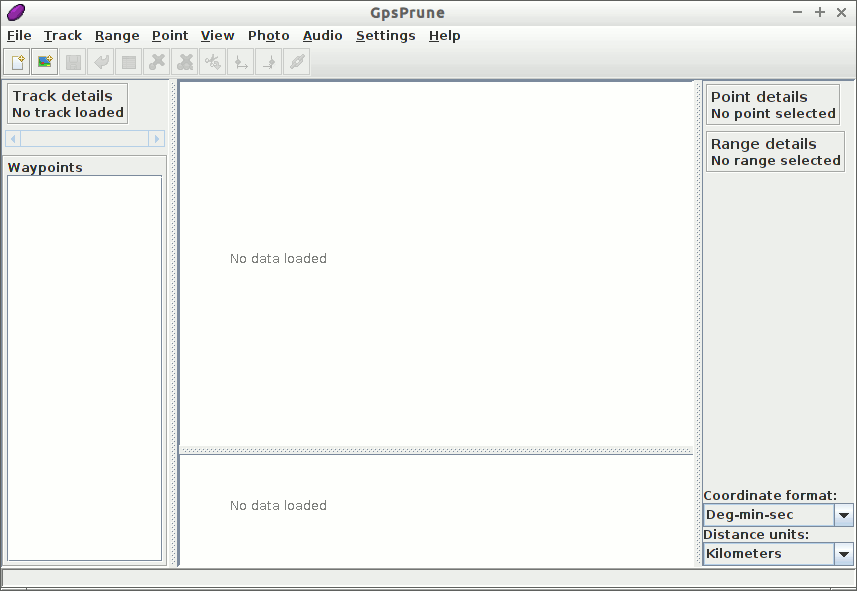

GpsPrune gyorstalpaló¶
A GpsPrune egy java alkalmazás koordináta adatok megjelenítésére és szerkesztésére. Felhasználható az adatok előkészítésére a GPS eszközökhöz és az azok által rögzített adatok elemzésére.
Ebben a gyorstalpalóban betöltünk és megjelenítünk a live lemezen található adatokat és ezek kiegészítésére néhány online információhoz férünk hozzá. Ezért hasznos lesz, ha ennek bemutatásához valamilyen fajta internet kapcsolattal rendelkezik.
Contents
Start GpsPrune¶
From the Start menu, choose . This will then give you the empty window shown below.
{kind=link}
A menü parancs felhasználásával most betöltünk egy fájlt. Ez lehet egy GPX, egy KML vagy egy KMZ fájl, vagy akár egy vesszővel vagy tabulátorral tagolt fájl, ha rendelkezik egy ilyennel. Egy megfelelő, pár nyomvonalat tartalmazó GPX fájl megtalálható a lemezen itt: ~/data/vector/gpx/test_trk2.gpx, így ezt töltjük be.

Mivel ez a fájl két nyomvonalat tartalmaz, kiválaszthatjuk melyiket töltsük be. Válasszuk az elsőt és nyomjunk OK-t.
Most látnia kell a kékkel jelölt nyomvonalat a fehér háttéren. Ha ez a nyomvonal útpontokat is tartalmazna (ami nem áll fent), akkor azok is megjelennének a nevükkel. Lent a fő térkép alatt egy magassági grafikon látható, mely a nyomvonal metszetét mutatja, ha az tartalmaz magasságokat.

Feltételezve, hogy van hálózati kapcsolata, bekapcsolhatja a térképet a földgömb ikonra kattintva a fő térképablak felső részén vagy a menüből .

Az egérrel húzogathatja a térképet és az egérgörgővel vagy dupla kattintással nagyíthat/kicsinyíthet. Jobb egérgombbal húzva megadhat egy téglalapot melyre nagyítani akar, a jobb gomb menü további lehetőségeket tartalmaz. Egy pontra kattintva megjelennek a részletek, beleértve a magasságot és az időpontot, ha rendelkezésre áll. A magassági metszetre is kattinthat, hogy a megfelelő pontot kiválassza.
A megjelenítés testreszabása¶
Megváltoztathatja a térképet a menüponttal. Vessünk egy pillantást egy alternatív térképforrásra az ötödik „Hikebikemap” kiválasztásával. Ez a hikebikemap.org-ról használja a térképet hegymászáshoz és kerékpározáshoz hasznos további információk megjelenítéséhez mint szintvonalak és kerékpárutak.

Advanced Functions¶
Now that we can load and view files from the included file system, let’s see if we can supplement this with some online information as well, using some more advanced functions.
Wikipedia¶
Most találjunk ki több információt, arról hol van ez a nyomvonal. Ezt egy pont kiválasztásával tehetjük meg és ezután a menüből . Ez a cikkek listáját adja, melyek koordinátája a legközelebb vannak a kiválasztott ponthoz. Az egyik listaelemre kattintva további információt kapunk a lenti részben.

Ezután a Load gombot használhatja a pont betöltésére a GpsPrune-ba vagy a Show webpage gombot a Wikipedia oldal böngészőbe betöltésére.
Gpsies¶
We can also use an online service to download another track from the same area. We can use the menu command to search for tracks on the website gpsies.com. Again, we get a list of matching entries, and we can select one to view the description.

Kattintson a Load gombra a nyomvonal betöltéséhez és válasszuk ki a nyomvonal hozzáfűzéséhez a már betöltött adatokhoz. Most mindkét nyomvonalat láthatjuk ugyanabban az ablakban.
Távolságok mérése¶
To find out how long the climb is, we will select just the part of the track which contains the climb, and then we will be able to view the properties of this selected range, such as the distance, climb and descent.
- Click on the point at the start of the climb, just north of Dunedin, to select it.
- Select to make this point the start of the selection.
- Select a point at the top of the climb by clicking on the highest point of the altitude profile.
- Select to finish the selection.
- You can now see in the „Range details” section that this part of the track is 8.55 km long, climbs 346 m and descends just 10 m.

Kipróbálandó dolgok¶
- Select a point in the track and delete it with
- Draw your own track with Create series of points from the right-click menu and measure the total distance
- Export an image of your track with
- If you have your own track files in any of the formats gpx, kml, kmz or csv, load one of these into GpsPrune and view it using one of the available maps
GpsPrune használata más rendszereken¶
A GpsPrune kipróbálása után a livelemezről lehet, hogy más rendszeren is használni szeretné, egy másik Linux vagy Mac OSX vagy Windows rendszeren. Néhány Linux kiadás tartalmazza a GpsPrune-t a szabványos könyvtárai között (keresse a „Prune”-t vagy „GpsPrune”-t), vagy egyszerűen letöltheti a honlapról a legújabb változatot.
It doesn’t need to be installed, but it does need a java runtime to be installed, version 1.5 or higher. You can extend GpsPrune’s functionalities by installing other free software, such as GPSBabel, Gnuplot, Exiftool and Java3d.
Miután telepítette a GpsPrune-t az állandó rendszerén elmentheti a beállításait a menüponttal. A program emlékezni fog ezekre amikor legközelebb futtatja a GpsPrune-t. Vegye figyelembe, hogy a live lemez használatakor az összes, a normál fájlrendszerbe mentett minden fájl elveszik amikor leállítja a számítógépet.
A letöltött térkép csempéket is elmentheti a lemezre a menüpont kiválasztásával és egy könyvtár megadásával, melybe a képeket mentjük. Ez segít a megjelenítés gyorsításában mivel nem kell ismételten letölteni a képeket.
További olvasmányok¶
- GpsPrune honlap: https://gpsprune.activityworkshop.net/
- Képernyőképek: https://gpsprune.activityworkshop.net/screenshots.html
- How-tos and instructions: https://gpsprune.activityworkshop.net/how-tos.html